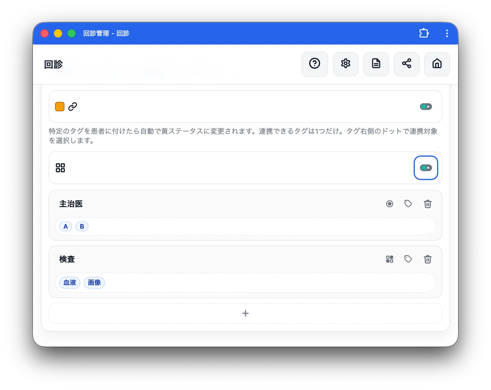
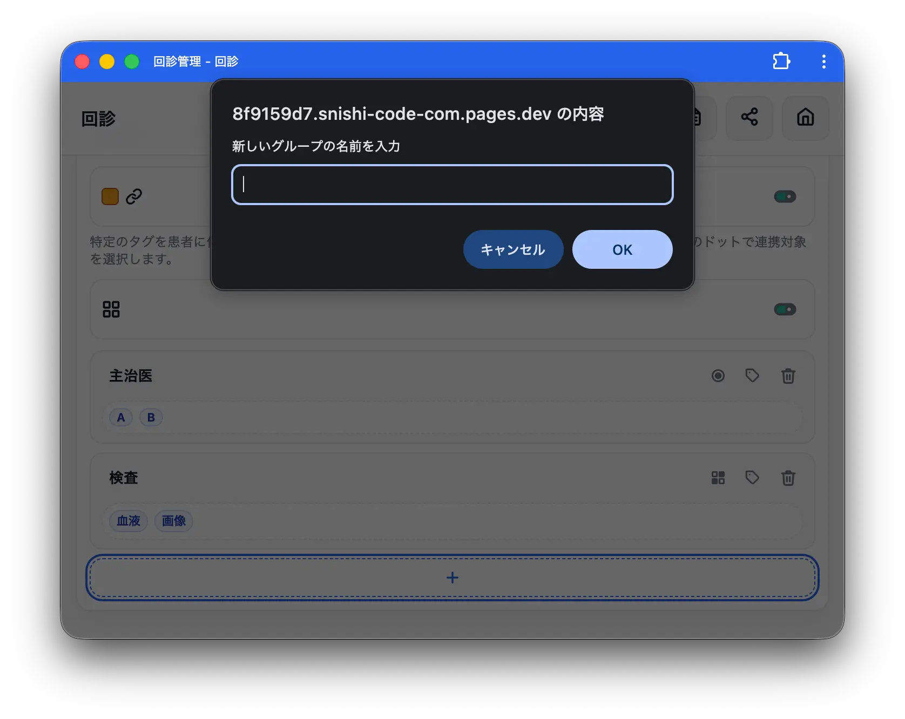
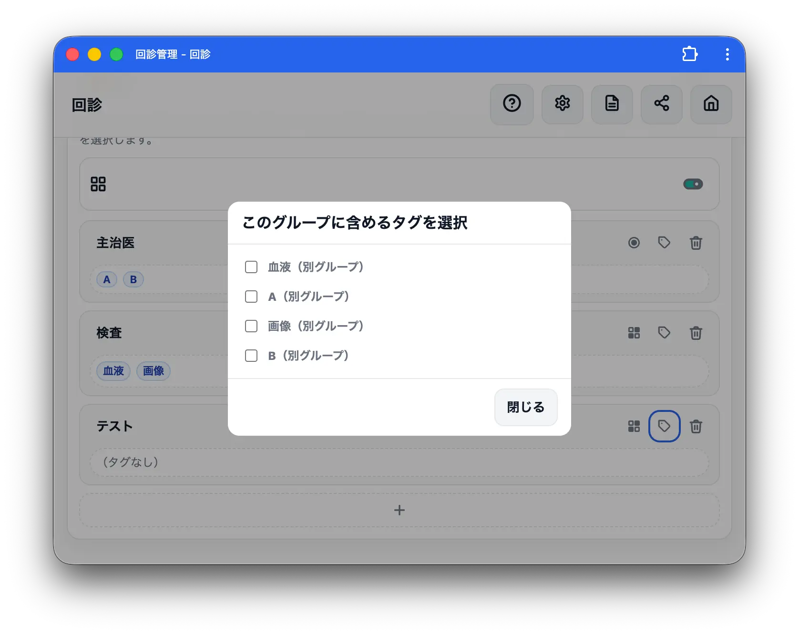
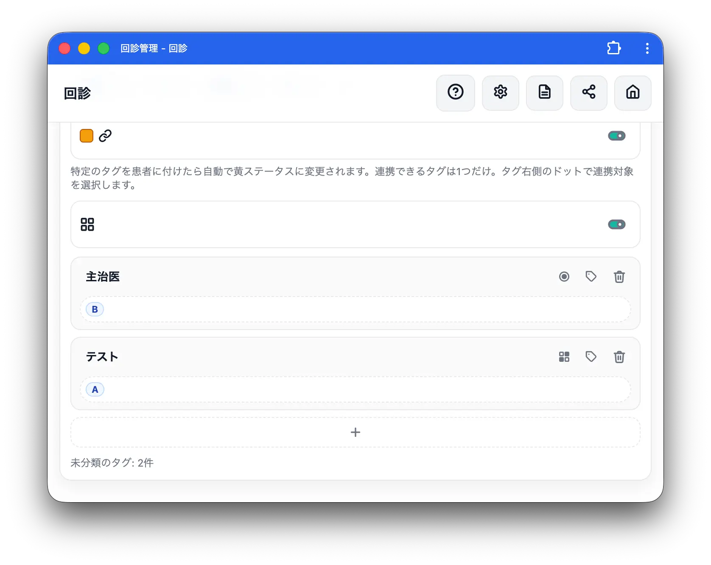
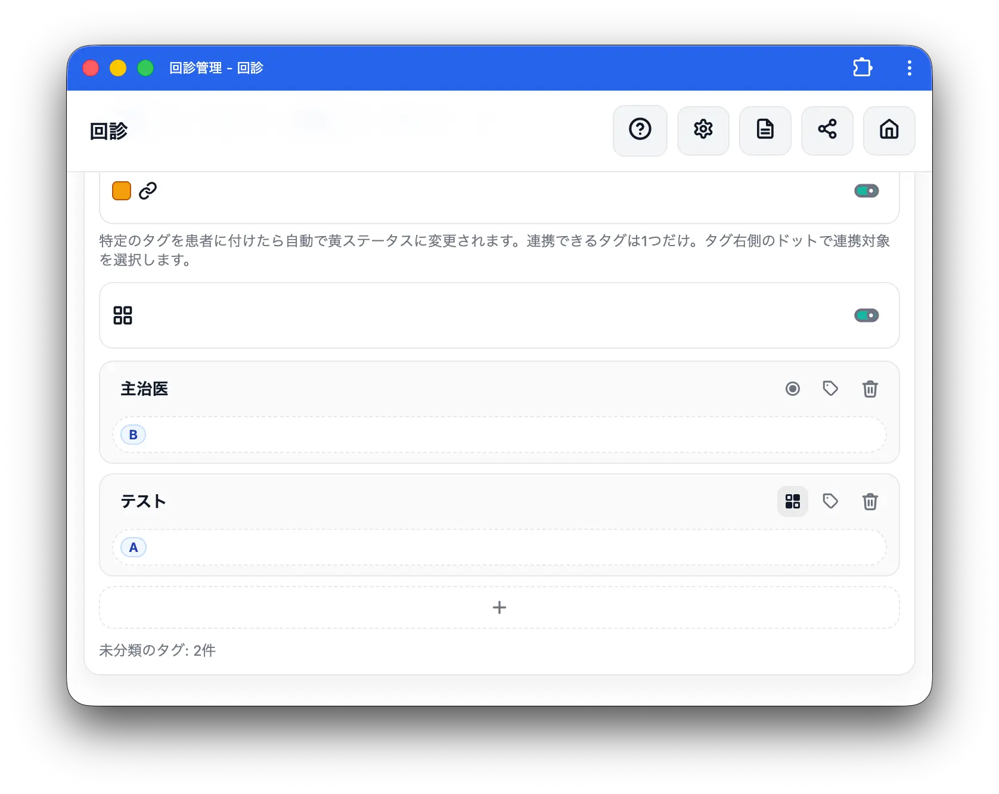
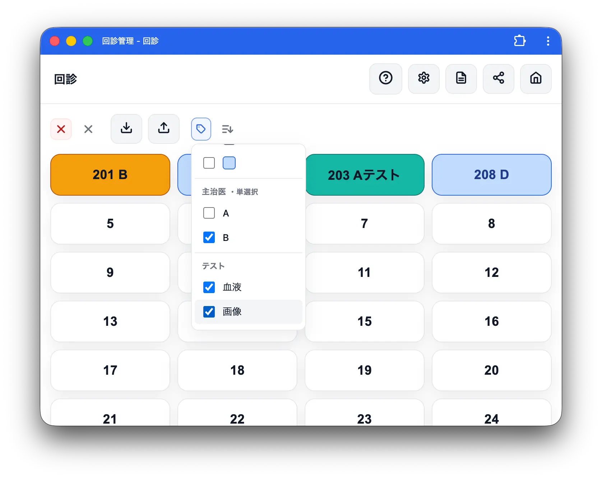

タグ機能：カテゴライズ
タグカテゴライズ機能は、タグをグループ分けすることができる機能です。
どういう時に使う？
タグが増えてきた時に使います。
例えば主治医数が10人、担当看護師が10人、検査数が5個、その他にも様々なタグを登録している場合、1つずつ登録するのが大変になります。
そういう時に
- 主治医タグ
- 看護師タグ
- 検査タグ
などとカテゴライズすることで管理しやすくします。
また、カテゴリーごとに単選択と複数選択を選ぶことができます。例えば主治医は1人しかいないので、主治医タグのうち選ぶことができるのは1つだけ、一方で検査は血液や画像など複数検査のあることもあるので複数選択できるように、とすることができます。 これによって誤って主治医を複数登録してしまうなどのミスを防ぐことができます。
有効化

タグ機能を有効化すると四角が4つ並んだアイコンのトグルが出現します。これを ON にすると有効化できます。
カテゴリー作成

下部の＋ボタンを押すとポップアップが表示されます。 任意のカテゴリー名を設定できます。

作成されたカテゴリー右上にあるタグアイコンをタップすると、そのカテゴリーに登録するタグを選択することができます。

タグに登録できるカテゴリーは1つだけです。別カテゴリーのタグを登録すると、タグはこちらのカテゴリーに移動します。

タグボタンの右側のゴミ箱ボタンでカテゴリーを削除できます。
タグボタンの左のボタンをタップすると単選択と複数選択を切り替えることができます。丸アイコンが単選択、四角が4つ並んでいるアイコンが複数選択です。
患者へのタグ付与

タグ機能と大枠は同じですが、カテゴリーごとにタグがカテゴライズして表示されます。 設定画面で選択した挙動をします。